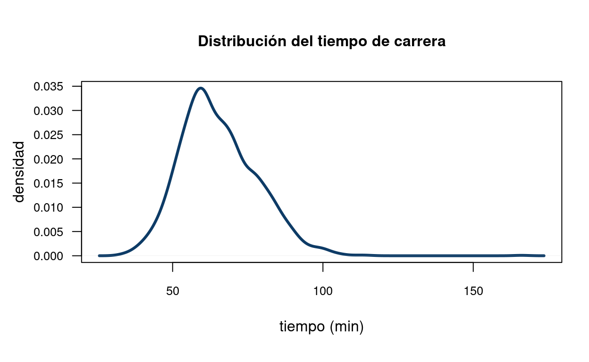

PRESENTACIÓN

El presente tutorial contiene preguntas relacionadas con , conceptos importantes en
CONCEPTOS
Dependiendo de el tipo de variable y el tipo de escala se elige el tipo de gráfica a utilizar para la representación de la variable.
| Tipo de variable | Tipos de escala | Tipo de gráfico | Sintaxis R |
|---|---|---|---|
| cualitativa | nominal | diagrama de torta | pie(table(x)) |
| ordinal | diagrama de barras | barplot(table(x)) |
|
| cualitativa-cualitativa | diag.barras dobles | barplot(table(x,y)) |
|
| cualitativa-cualitativa | diag. mosaico | plot(x,y) |
| cuantitativa | intervalo/ razón | diagrama de tallos y hojas | stem(x) |
| intervalo/ razón | histograma | hist(x) |
|
| intervalo/ razón | diagrama de puntos | plot(x,y) |
|
| intervalo/ razón | diagrama de densidad | density(x) |
|
| intervalo/ razón | diagrama de cajas | boxplot(x) |
|
| intervalo/ razón | diagrama de linea | plot(x, type="l") |
|
| cuantitativa-cuantitativa | intervalo/ razón | diagrama de dispersión | plot(x,y) |
Nota: Además de estas formas de representación gráfica existen otras formas que combinan variables como:
- Mapas
- Diagrama de Mosaico
- Diagramas de radar
- Diagrama likert
MAPA
CUESTIONARIO
Pregunta 1
Pregunta 2
Pregunta 3
Pregunta 4
El siguiente diagrama de tallos y hojas contiene información sobre el tiempo en segundos que tarda una respuesta a una solicitud electrónica que tiene como promedio 166.1 s.
10 | 4 12 | 34486899 14 | 5659 16 | 124588934566799 18 | 1156822356 20 | 56
Pregunta 5
La siguiente gráfica de densidad, se presenta el tiempo de carrera registrado por un grupo de atletas en la carrera la Luz 2022

PROBLEMAS
Problema 1
El paquete paqueteMET contiene la data inflacion que corresponde a la serie de tiempo de este indicador desde enero de 1993 a diciembre de 2022. Construya una gráfica de tiempo que de cuenta del comportamiento de esta variable para el periodo indicado.
data(paqueteMOD)
data(inflacion2022)data(paqueteMOD)
data(inflacion2022)
y=ts(inflacion2022$inflacion, star=c(1993,1), end=c(2022,12), frequency=12)data(paqueteMOD)
data(inflacion2022)
y=ts(inflacion2022$inflacion, star=c(1993,1), end=c(2022,12), frequency=12)
plot(y, type="l",
main="Inflación Colombia ene-1993 a dic -2022",
ylab="inflación acumulada anual (%)",
xlab = "meses", las=1,
col="#ee964b",
lwd = 4)**Problema 2*
Durante 5 meses se construyen 134 kilómetros de carretera en la siguiente forma: En el primer més, 3.60% del total del proyecto; en el segundo més un 7.60% del total; en el tercer més, el 15.3% del total; en el cuarto més 24.5% del total y en último més, el 49% restante.
mes= 1:4
construccion=c(0.036,0.076,0.153,0.245,0.490)mes=1:5
construccion=c(0.036,0.076,0.153,0.245,0.490)
plot(mes,construccion)
plot(y, type="l",
main=" ",
ylab=" ",
xlab = " ", las=1,
col="#ee964b",
lwd = 4
)Problema 3
Una consulta en tiendas en linea para memorias USB 128GB arrojó lo siguientes valores:
6 | 0 3 4
6 | 7 8 8 8
7 | 0 0 1 1 2 2 2 3 3 4 4
7 | 5 5 5 5 5 6 6 7 7 9
8 | 0 3 3 4
8 | 5 6 7 8 8 9 9
9 | 1
x=c(60, 63, 64, 67, 68, 68, 68, 70, 70, 71, 71, 72, 72, 72, 73, 73, 74, 74, 75, 75, 75, 75, 75, 76, 76, 77, 77, 79,
80, 83, 83, 84, 85, 86, 87, 88, 88, 89, 89, 91)x=c(60, 63, 64, 67, 68, 68, 68, 70, 70, 71, 71, 72, 72, 72, 73, 73, 74, 74, 75, 75, 75, 75, 75, 76, 76, 77, 77, 79,
80, 83, 83, 84, 85, 86, 87, 88, 88, 89, 89, 91)
boxplot(x, las=1,
main=" ",
ylab=" ",
xlab = " ",
col="#ee964b")
grid()